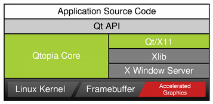

| Home · All Classes · Main Classes · Grouped Classes · Modules · Functions |
Qtopia Core is a C++ framework for GUI and application development for embedded devices. It runs on a variety of processors, usually with Embedded Linux. Qtopia Core provides the standard Qt API for embedded devices with a lightweight window system.

Qtopia Core applications write directly to the framebuffer, eliminating the need for the X Window System and saving memory. The Linux framebuffer is enabled by default on all modern Linux distributions. For information on older versions, see http://en.tldp.org/HOWTO/Framebuffer-HOWTO.html. For development and debugging purposes, Qtopia Core provides a virtual framebuffer. It is also possible to run an application using the VNC protocol.
| Getting Started | Reference | Features |
|---|---|---|
| Development | Porting | Optimization |
| Copyright © 2008 Trolltech | Trademarks | Qt 4.3.5 |